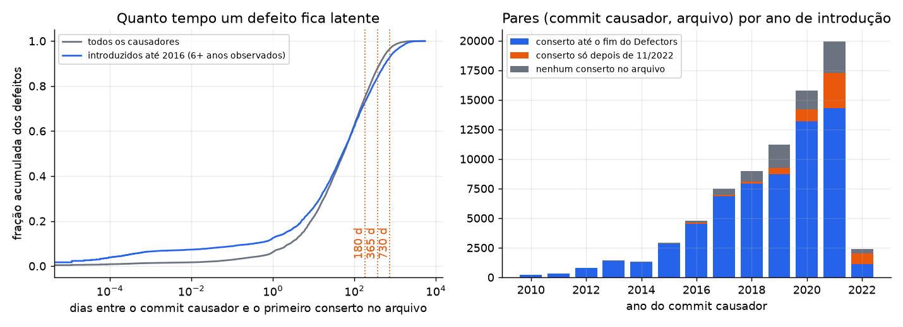
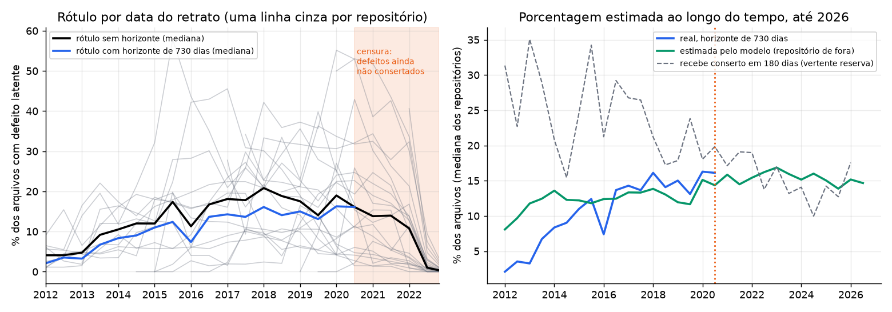
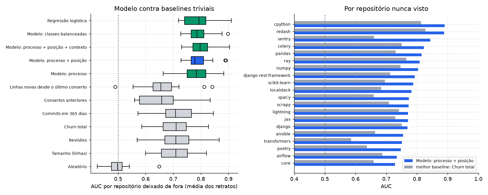
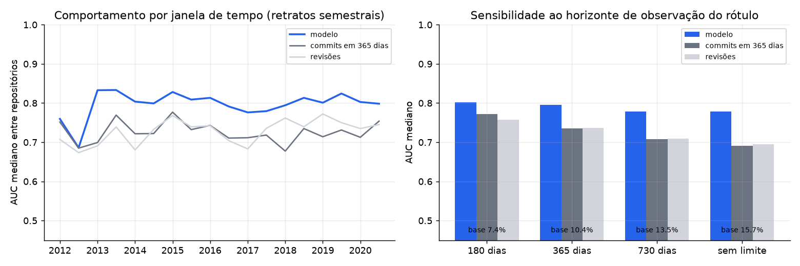
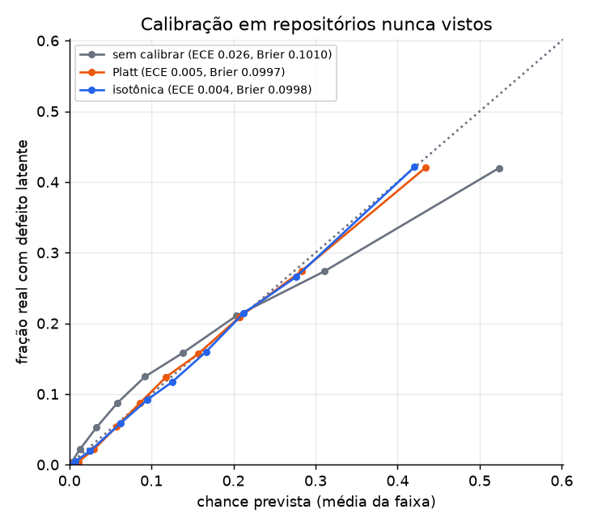
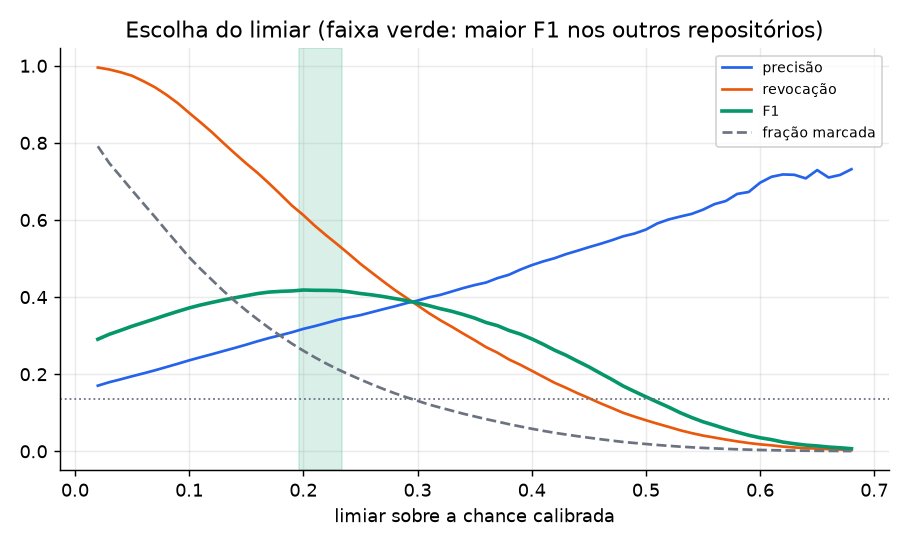
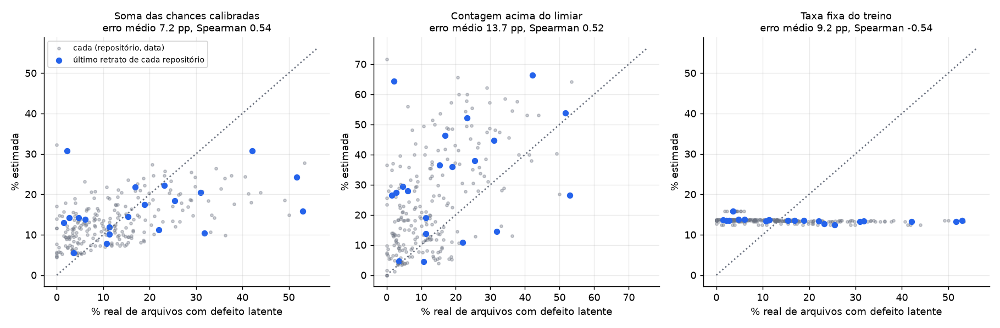
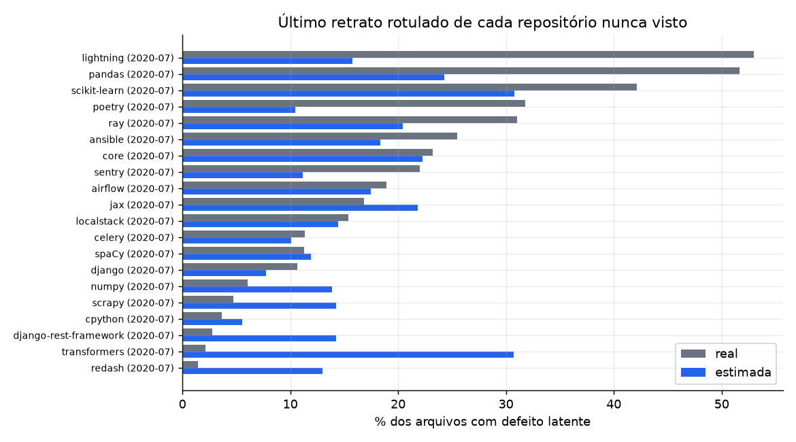
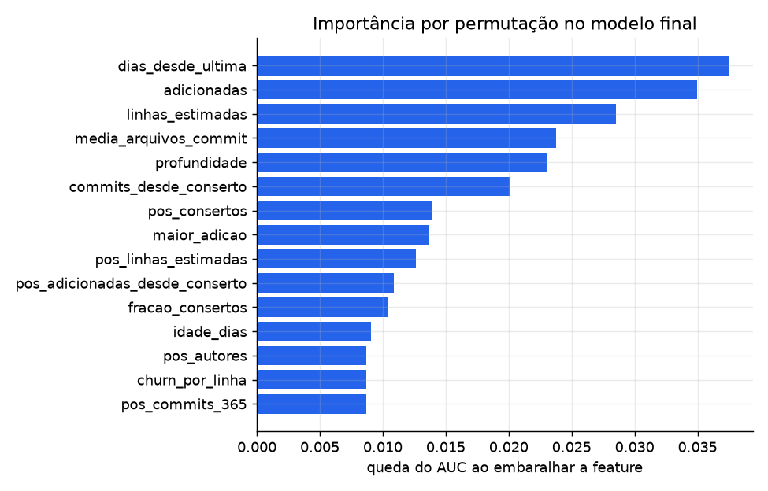

Defeito latente por arquivo no estado atual do repositório. Todos os números
vêm de resultados/avaliacao.json, gerado por
frente1_treinamento/avaliar.py.
Um arquivo tem defeito latente em T quando recebeu, até T, linhas de um commit que o Defectors (SZZ) marcou como causador de defeito, e o primeiro commit de conserto no mesmo arquivo vem depois de T, em até 730 dias. Foram 78024 pares (commit causador, arquivo): 81.6% com conserto posterior até o fim do Defectors, 10.8% sem conserto no arquivo e 7.5% com conserto só depois; os dois últimos grupos não contam como defeito. Entre os causadores até 2016, a mediana até o conserto é de 51 dias; 84% são consertados em 1 ano e 93% em 2 anos, o que motivou o horizonte de 730 dias.

Os retratos são semestrais. Perto do fim do Defectors (11/2022) os defeitos ainda não tinham sido consertados, e o rótulo sem horizonte despenca. Com horizonte fixo de 730 dias, todo retrato até 2020-07-01 é totalmente observável: só esses entram no treino e na avaliação. À direita, a porcentagem estimada pelo modelo segue até 2026, onde não há rótulo do Defectors.

129903 retratos de 20 repositórios, taxa base de 13.5%. Cada repositório fica de fora uma vez. O AUC de um repositório é a média dos AUCs de seus retratos. Os testes comparam o modelo final (Modelo: processo + posição) com cada outro método, pareando por repositório.

| Método | AUC mediano | AUC médio | Pior repositório | Defeito no topo 10% | Modelo vence em | Wilcoxon p | Delta de Cliff |
|---|---|---|---|---|---|---|---|
| Aleatório | 0,498 | 0,500 | 0,424 | 13,3% | 20 | 1,9e-06 | 1,00 |
| Tamanho (linhas) | 0,710 | 0,706 | 0,599 | 26,4% | 19 | 3,8e-06 | 0,75 |
| Revisões | 0,709 | 0,719 | 0,569 | 31,2% | 19 | 1,3e-05 | 0,61 |
| Churn total | 0,711 | 0,710 | 0,586 | 26,3% | 20 | 1,9e-06 | 0,76 |
| Commits em 365 dias | 0,709 | 0,720 | 0,572 | 32,4% | 19 | 5,7e-06 | 0,57 |
| Consertos anteriores | 0,658 | 0,659 | 0,560 | 28,6% | 20 | 1,9e-06 | 0,84 |
| Linhas novas desde o último conserto | 0,655 | 0,661 | 0,489 | 20,8% | 18 | 3,6e-05 | 0,84 |
| Modelo: processo | 0,784 | 0,785 | 0,663 | 39,4% | 11 | 0,52 | 0,01 |
| Modelo: processo + posição | 0,778 | 0,790 | 0,728 | 39,5% | n/d | n/d | n/d |
| Modelo: processo + posição + contexto | 0,797 | 0,801 | 0,730 | 40,8% | 7 | 0,076 | -0,18 |
| Modelo: classes balanceadas | 0,786 | 0,791 | 0,727 | 39,8% | 11 | 0,67 | -0,01 |
| Regressão logística | 0,793 | 0,791 | 0,719 | 39,6% | 8 | 0,93 | -0,03 |
| Método | AUC mediano | Modelo vence em | Wilcoxon p | Delta de Cliff |
|---|---|---|---|---|
| Aleatório | 0,516 | 19 | 3,8e-06 | 0,92 |
| Tamanho (linhas) | 0,775 | 16 | 0,0049 | 0,32 |
| Revisões | 0,744 | 18 | 0,0017 | 0,45 |
| Churn total | 0,756 | 16 | 0,0032 | 0,36 |
| Commits em 365 dias | 0,747 | 18 | 0,0001 | 0,34 |
| Consertos anteriores | 0,699 | 18 | 3,6e-05 | 0,56 |
| Linhas novas desde o último conserto | 0,672 | 17 | 0,0017 | 0,70 |
| Modelo: processo | 0,803 | 13 | 0,19 | 0,03 |
| Modelo: processo + posição | 0,796 | n/d | n/d | n/d |
| Modelo: processo + posição + contexto | 0,799 | 8 | 0,23 | -0,07 |
| Modelo: classes balanceadas | 0,799 | 10 | 0,9 | -0,03 |
| Regressão logística | 0,806 | 11 | 0,78 | -0,07 |
O AUC é estável entre as datas. O mesmo modelo, treinado com 730 dias, ordena bem qualquer horizonte. Validação auxiliar com a vertente reserva: em retratos de 2023 em diante, fora do Defectors, a nota do modelo prevê quem recebe conserto em 180 dias com AUC mediano 0.753 em 23 repositórios (commits em 365 dias: 0.800; revisões: 0.774).

A chance precisa ser uma probabilidade para que a soma dê a porcentagem do repositório. Os calibradores são ajustados em previsões feitas fora da dobra, por repositório, e aplicados ao repositório deixado de fora.

O limiar de cada repositório é escolhido nos outros. Maior F1: limiar entre 0.20 e 0.23, precisão 31.6%, revocação 59.1%, F1 0.412, marcando 25.3% dos arquivos (base 13.5%). Precisão mínima de 50%: limiar entre 0.39 e 0.44, precisão 48.3%, revocação 18.7%.

Para cada (repositório, data), a porcentagem real é a fração de arquivos com defeito latente, e a estimada vem de três formas: soma das chances calibradas, contagem acima do limiar e a taxa fixa do treino (baseline que ignora o repositório).

| Estimador da % do repositório | Erro médio (pp) | Erro mediano (pp) | Viés (pp) | Spearman | Erro no último retrato (pp) | Spearman no último |
|---|---|---|---|---|---|---|
| Soma das chances sem calibrar | 7,09 | 5,74 | +0,22 | 0,55 | 10,39 | 0,37 |
| Soma das chances (Platt) | 7,22 | 6,00 | +0,29 | 0,54 | 10,49 | 0,40 |
| Soma das chances (isotônica) | 7,24 | 5,88 | +0,36 | 0,54 | 10,51 | 0,36 |
| Contagem acima do limiar de maior F1 | 13,73 | 10,50 | +11,01 | 0,52 | 19,00 | 0,31 |
| Contagem acima do limiar de precisão mínima | 9,97 | 7,43 | -9,25 | 0,55 | 14,63 | 0,34 |
| Baseline: taxa fixa do treino | 9,17 | 8,60 | +0,28 | -0,54 | 12,80 | -0,70 |

Importância por permutação no modelo final, treinado em todos os repositórios.
